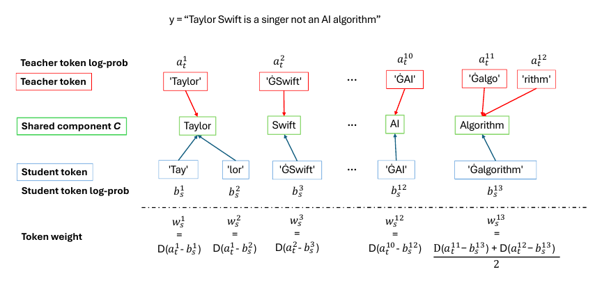
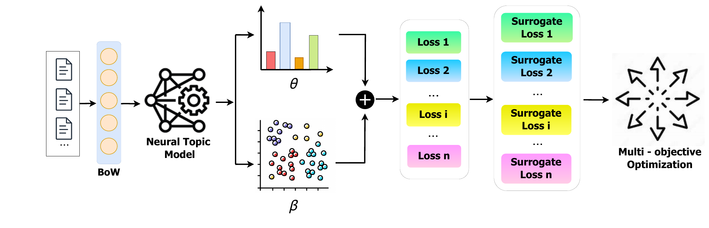
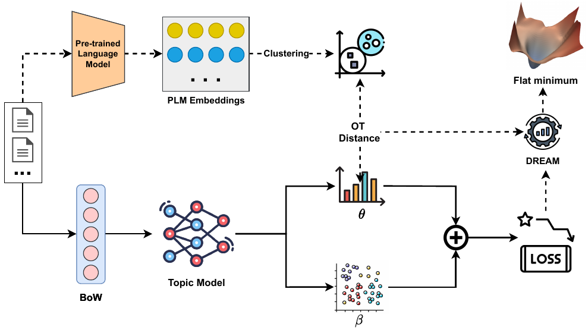
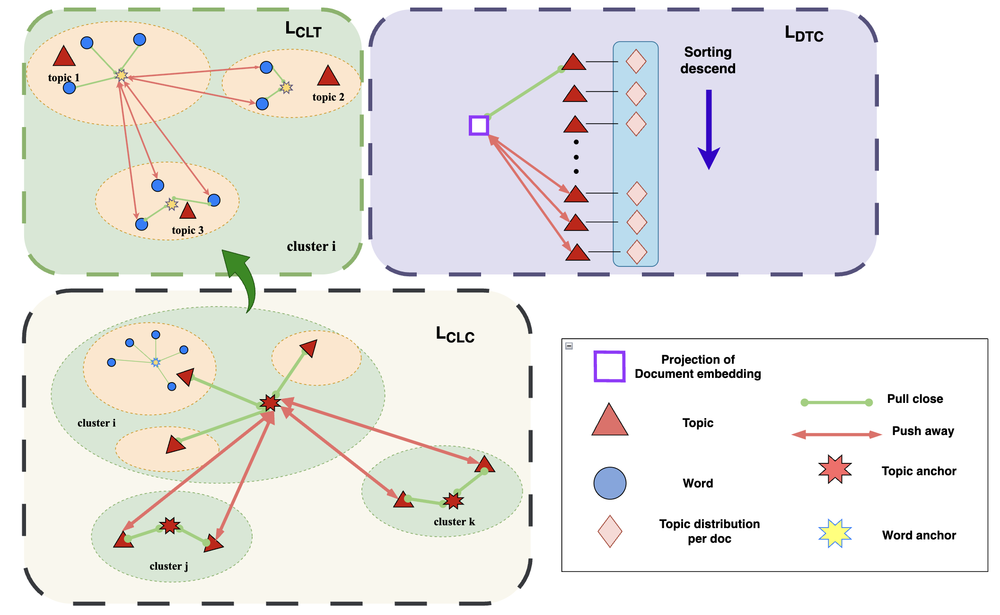
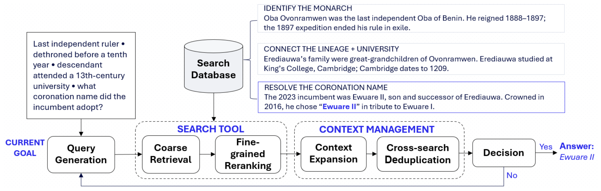
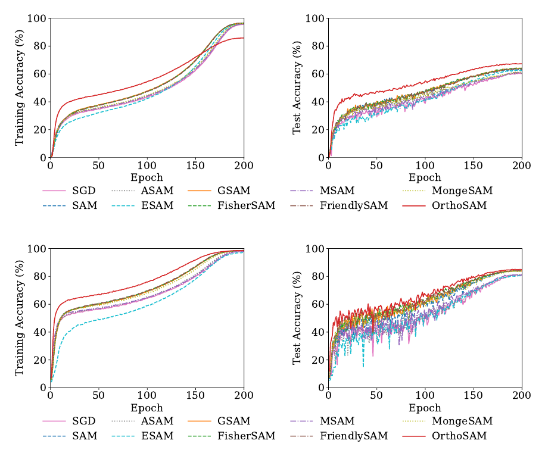
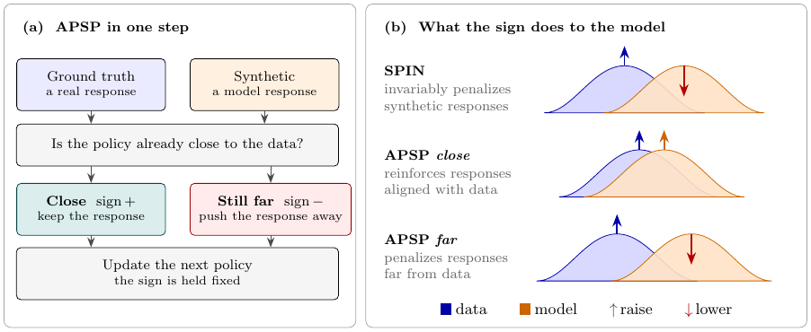
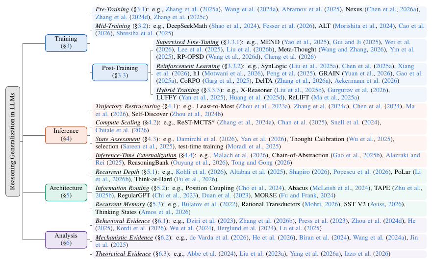

A Survey on Knowledge Distillation of Vision-Language Models.
Findings of the Association for Computational Linguistics: EMNLP 2026
You can also find my articles on my Google Scholar profile.
A Survey on Knowledge Distillation of Vision-Language Models.
Findings of the Association for Computational Linguistics: EMNLP 2026

f-Divergence Self-Play for Tabular Anomaly Detection via Large Language Models.
International Conference on Machine Learning (ICML 2026)

MCW-KD: Multi-Cost Wasserstein Knowledge Distillation for Large Language Models.
AAAI Conference on Artificial Intelligence (AAAI 2026)

Token-Level Self-Play with Importance-Aware Guidance for Large Language Models.
Advances in Neural Information Processing Systems (NeurIPS 2025)

Multi-Surrogate-Objective Optimization for Neural Topic Models.
Findings of the Association for Computational Linguistics: EMNLP 2025

HiCOT: Improving Neural Topic Models via Optimal Transport and Contrastive Learning.
Findings of the Association for Computational Linguistics: ACL 2025

Sharpness-Aware Minimization for Topic Models with High-Quality Document Representations.
North American Chapter of the Association for Computational Linguistics (NAACL 2025)

A Framework for Neural Topic Modeling using Hierarchical Clustering and Contrastive Learning with Optimal Transport.
Neurocomputing (Q1), 2026

CORE: Coarse-to-Fine Search with Context Management for Deep Research.
Under review at NAACL 2027

OrthoSAM: Orthogonal Perturbations for Sharpness-Aware Minimization.
Under review at ICLR 2027

Not All Rollouts Are Negative: Adaptive Polarity in Self-Play Fine-Tuning.
Under review at ACL 2027

Beyond the Training Distribution: A Survey of Reasoning Generalization in Large Language Models.
Under review at ACL 2027